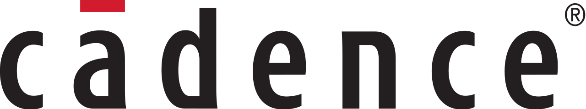
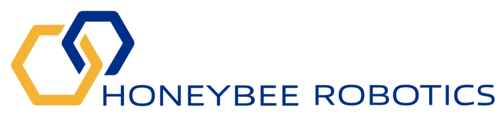
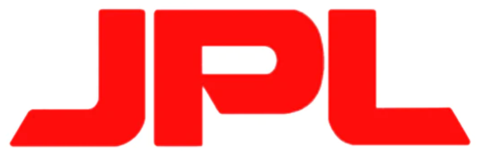
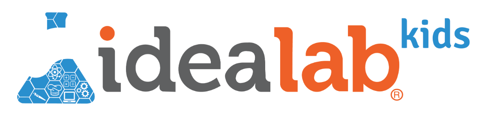

About Me
I am an undergraduate at Caltech studying electrical and computer engineering. My coursework relevant to my interests include advanced embedded and digital systems design, computing systems, signal processing, PCB design, and feedback and control circuits.
I am fascinated by the way hardware and software can be integrated together, and I have published a variety of projects on my website (see Portfolio tab) that capture my interests. I hope you enjoy reading about my projects, and please feel free to reach out if you would like to connect!
Education
- California Institute of Technology - B.S. Electrical Engineering (September 2021 - June 2025)
- Cumulative 4.0 GPA
- Electrical and computer engineering track
- Embedded systems design, digital systems design, signal processing, PCB design, analog circuit design, feedback and control circuits, and computing systems
Experience
- Cadence Design Systems - Application Engineering Intern (Incoming Summer 2024)
- Caltech Mixed-mode Integrated Circuits and Systems Lab - Undergraduate Researcher (September 2023 - Present)
- System-level design of I2C and digital interfaces for ASIC to communicate with Nordic microcontroller
- Firmware developed for I2C and Bluetooth Low Energy for minimal power consumption
- Caltech - Teaching Assistant (September 2023 - December 2023)
- Assisted students with electronic system prototyping skills
- Schematic capture, PCB layout, and board assembly and circuit debugging
- Honeybee Robotics - Software Engineering Intern (June 2023 - September 2023)
- Developed embedded software in C
- Implemented state machines with RTOS, hardware emulators, and packet transfer test scripts
- Worked with FPGA and electrical design teams to coordinate design specifications
- NASA Jet Propulsion Laboratory - Undergraduate Researcher (June 2022 - August 2022)
- Created testbed with Linux-based software designed radios to characterize multipath propagation effects at lunar landing sites
- Designed UAV payload and performed signal processing of Doppler effects with MATLAB
- Idea Lab Kids - Electronics Intern (June 2021 - August 2021)
- Designed projects for students (K-8) to learn about robotics, circuit design, and coding with Arduino
- Created 30+ lesson plans and performed Q&A on 50+ lessons




Clubs and Activities
- Caltech NCAA Baseball Team (September 2021 - Present)
- Committed approximately 25 hours per week to training, meetings, travel, and competition while maintaining full course load during spring season
- Caltech Racing - Electrical Team (September 2022 - Present)
- Designed dashboard electronics for Formula SAE competition car
- Schematic capture and PCB design in Altium
- Board connects to TFT display, high voltage interlock, CAN communication bus, and external buttons, potentiometers, and LEDS
- FIRST Robotics - Alumni and Volunteer Mentor (September 2017 - Present)
- Designed shooting, climbing, and intake mechanisms for FIRST Robotics competition (2017- 2021)
- Competed in World Championship in 2018 and 2019
- Currently volunteering as a mentor
Skills
- Digital Design: Verilog
- Low-level software/firmware: C and Assembly
- Schematic Capture and PCB Design: Diptrace and Altium
- Microcontrollers: ARM Architecure (TI, STM32, Nordic)
- Circuit design: SPICE simulation
- Communication protocols: I2C, SPI, UART, CAN
- Data analysis: MATLAB
- Higher-level langages: Python and Java
Awards
- Academic All-District
- Recognizes NCAA athletes for outstanding performance on the field and in the classroom
- Eagle Scout
- Highest rank in Boy Scouts of America